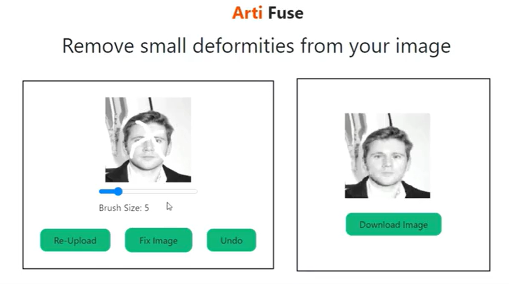
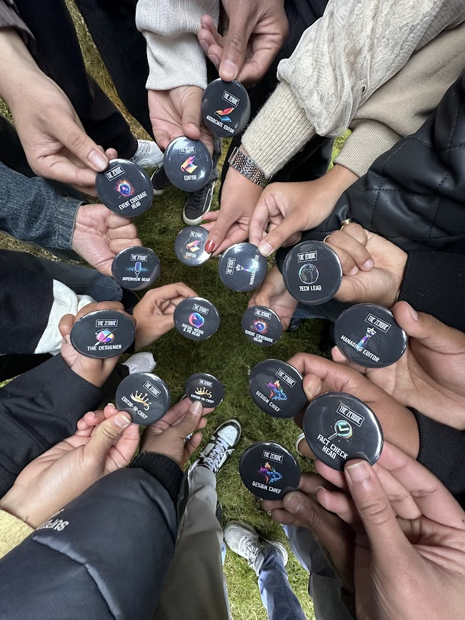
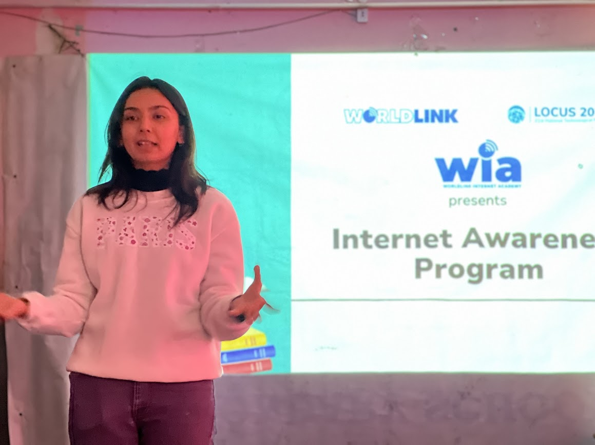
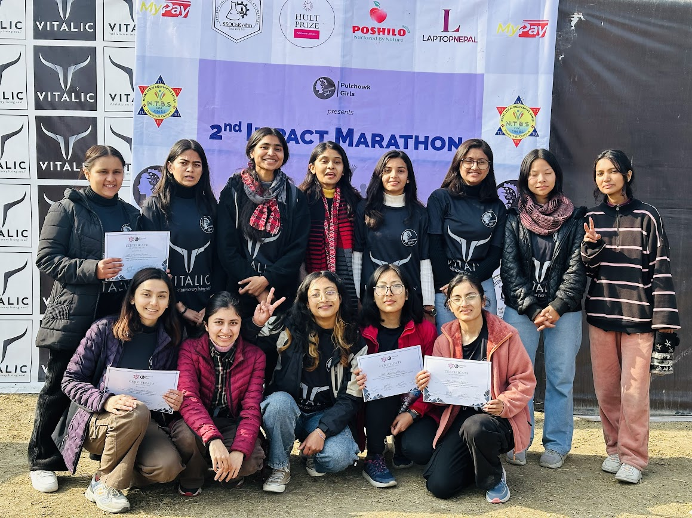

My Academic Journey
Bachelor's in Computer Engineering
Pulchowk Campus, Tribhuwan University, IOE, Nepal
📅 2021 – 2025
Higher Secondary Education (Science and Mathematics / +2)
Motherland Secondary School, Nepal
📅 2018 – 2020
Secondary Education (SLC / SEE)
Motherland Secondary School, Nepal
📅 Completed 2017
Things I've Built

Character Recognition of Nepali Vehicle Number Plate
Click to learn more →

Artifuse: Image Inpainting with AI
Click to learn more →

Handwritten Devanagari Character Recognition
Click to learn more →
Research Work
Character recognition of nepali number plate
🔗 View PublicationCommunity Contributions

The Zerone — Event Coverage Head
Pulchowk Campus · Technical Magazine
The Zerone is more than just a magazine — it's a tradition carried forward by students of Pulchowk Campus, a technical publication designed, written, and published entirely by students themselves...
The Zerone is more than just a magazine — it's a tradition carried forward by students of Pulchowk Campus, a technical publication designed, written, and published entirely by students themselves. As the Event Coverage Head, I had the incredible responsibility of capturing moments that mattered — the energy of hackathons, the intensity of tech talks, and the quiet brilliance of students building things behind the scenes. One of the most memorable events I covered was CIT (Children in Technology), where I documented the stories of young minds being introduced to the world of technology for the very first time. From framing the right shots to writing stories that did justice to each moment, this role taught me that technology isn't just about building — it's also about storytelling, preserving memories, and inspiring others through words and images.

Children in Technology (CIT)
Pulchowk Campus CE · Worldlink · Nationwide, Nepal
Some experiences change you quietly. CIT was one of those — a collaborative initiative between Computer Engineering students of Pulchowk Campus and Worldlink, reaching across all provinces of Nepal...
Some experiences change you quietly. CIT was one of those — a collaborative initiative between Computer Engineering students of Pulchowk Campus and Worldlink, reaching across all provinces of Nepal to spread digital awareness. We traveled to remote communities where the internet was still a novel concept, where children's eyes would light up the moment they saw a computer screen for the first time. It wasn't just about teaching them how to browse or type — it was about opening a window to possibilities they never knew existed. From the hills of western Nepal to the terai plains, every classroom we walked into was a reminder that access to technology isn't a luxury, it's a bridge to opportunity. This experience grounded me, and I carry those moments with me — the excitement of a child discovering Google Maps and finding their own village on the screen.

Pulchowk Girls — Impact Marathon 2.0
Pulchowk Campus · Kathmandu
Running 5 kilometers might not sound like a revolution, but when hundreds of people show up at dawn — lacing up their shoes, stretching under the early morning sky — it starts to feel like one...
Running 5 kilometers might not sound like a revolution, but when hundreds of people show up at dawn — lacing up their shoes, stretching under the early morning sky — it starts to feel like one. Impact Marathon 2.0, organized under the Pulchowk Girls initiative, was born from a simple but powerful idea: health matters, movement matters, and community matters. As one of the organizers, I was involved in every step — from planning the route and coordinating with local authorities to managing volunteer stations and cheering runners across the finish line. The marathon was more than just a race. It was a statement about obesity reduction, about women leading in spaces they're often overlooked in, and about the engineering community stepping outside the lab to make a tangible, physical impact. Seeing participants of all ages — from first-year students to professors — crossing the finish line with smiles and sweat was the most rewarding part of it all.

Teaching Instructor — LOCUS, Pulchowk Campus
Advanced C · Girls to Code · Software Fellowship
There's a particular kind of joy in watching someone's face the moment a concept clicks — that shift from confusion to confidence. As a volunteer teaching instructor, I got to witness that magic over and over...
There's a particular kind of joy in watching someone's face the moment a concept clicks — that shift from confusion to confidence. As a volunteer teaching instructor, I got to witness that magic over and over again. I taught advanced C programming courses, mentored students through the "Girls to Code" initiative — a program dedicated to empowering women in tech — and contributed to the Software Fellowship organized by LOCUS, the annual technical festival of Pulchowk Campus. Each of these experiences was different, yet connected by the same thread: giving back to the community that shaped me. In the Advanced C sessions, I helped students navigate pointers, memory management, and data structures — the building blocks that could make or break their engineering journey. In Girls to Code, I saw firsthand how representation matters. When young women see someone who looks like them teaching, debugging, and problem-solving, it quietly reshapes what they believe is possible for themselves.